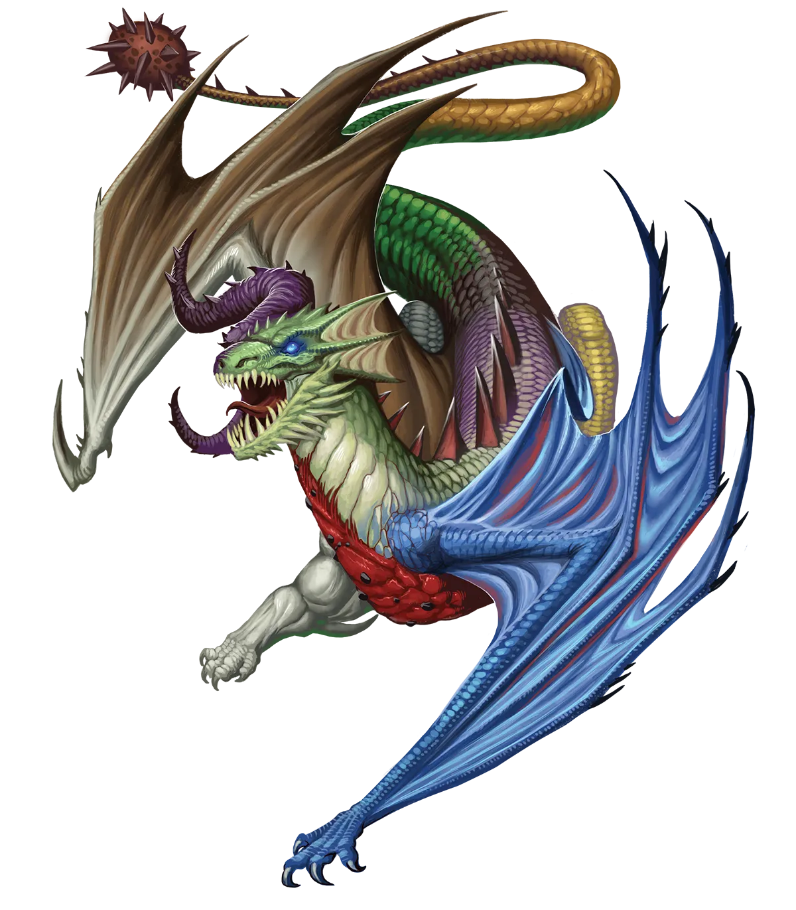
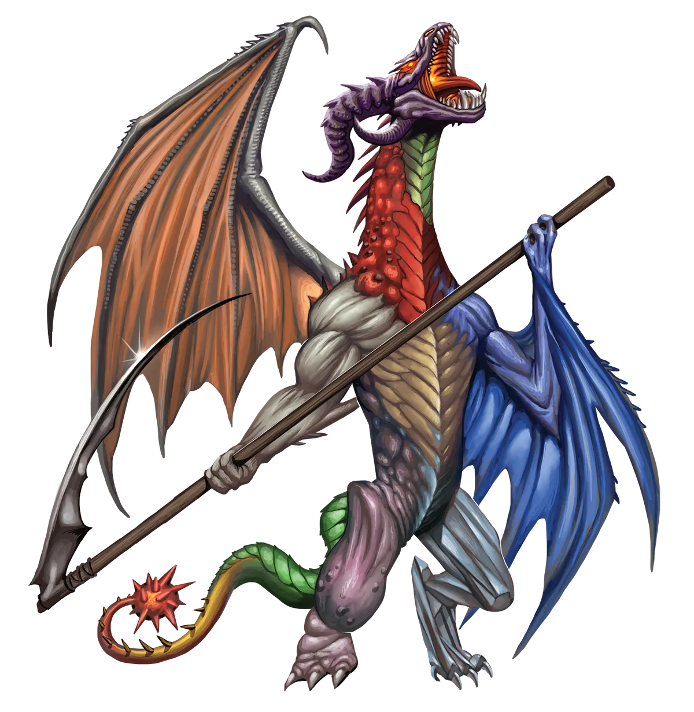

这可真是随机
混乱龙热衷于变化，而非在任何给定情境中完全、彻底的随机。这一点很容易被误解。如果某人随身带着骰子，并且总是掷骰子来决定他们的行动方式，你可能会认为那是混乱的，但实际上那是一种彻底的守序行为。混沌会适应情境并保持灵活。守序则规定处理事情的方式，并且无论发生什么都不折不扣地遵循。
纷乱龙 Tumult Dragon |
|
|
混乱龙最渴望的事物莫过于：变化。事实上，每一条混乱龙之所以尚未执行永恒之光仪式，唯一的原因就是它们隐隐觉得，这个仪式所引发的急剧变化，最终可能会在龙类过早地达至力量的顶峰之后，导致停滞。希望将奇迹的传播绵延数千年而非仅仅几周，这种愿望是可以理解的。这样做能让混乱龙们避开它们终生都试图逃避的无聊。但这在很大程度上也依赖于耐心，而耐心这个概念对于大多数混乱龙来说几乎陌生。 虽然有大量混乱龙执行了永恒之光仪式，但其中少数传统派通常将他们的永恒同胞视为过于急切，预言一旦永恒之光有机会对其施加改变，他们最终会因这一鲁莽的决定而追悔莫及。然而，私下里，这些传统派并非想要改变任何人的想法。更多时候，这个传统派只是试图说服自己，留在当前道路上的选择是正确的。这些微弱的辩护很少能持续长久。成群结队的混乱龙通常会接连迅速执行这个仪式，一旦一条龙迈出那一步，其他龙便会效仿。 由于它们经常一起执行永恒之光仪式，混乱龙比其他任何种类的龙都更有可能组成完全由永恒之民构成的冒险小队。当然，这个仪式并不会削弱混乱龙对变化和多样性的热情，这导致成群的永恒混乱龙会特意邀请其他传承的冒险者加入他们的行列。孤身一人的永恒混乱龙则会随波逐流，加入任何类型的队伍。最重要的是，他们能够在充满活力和不寻常的地点体验到各种各样的冒险。他们会避免与那些在一个地方停留太久，或是一遍又一遍地执行相同类型冒险的队伍合作。例如，一个执行重复性任务（比如在相同的地方消灭同种类的怪物）的队伍，是完全不可接受的。如果他们发现自己的同伴陷入一成不变的套路，混乱龙会把这视为一个个人挑战，来掀起波澜。其他冒险者并不总是欣赏龙类努力让他们的生活摆脱乏味，而那些寻求稳定一致的队伍可能会进行抵制。然而，即使在这些情况下，通常也有可能达成折中方案。毕竟，学会与他人合作需要变化，而如果混乱龙不是适应力极强的生物，那它还能是什么呢？ 永恒混乱龙喜欢那些能让他们每天改变所做之事、并随着新体验的到来而适应的职业。因此，需要预先准备法术的施法者职业往往是他们的完美选择。 这可真是随机 混乱龙热衷于变化，而非在任何给定情境中完全、彻底的随机。这一点很容易被误解。如果某人随身带着骰子，并且总是掷骰子来决定他们的行动方式，你可能会认为那是混乱的，但实际上那是一种彻底的守序行为。混沌会适应情境并保持灵活。守序则规定处理事情的方式，并且无论发生什么都不折不扣地遵循。 纷乱龙特质 Tumult Dragon Traits 你出身于一脉变幻莫测、渴求万象变革的纷乱龙世系。 |
  |